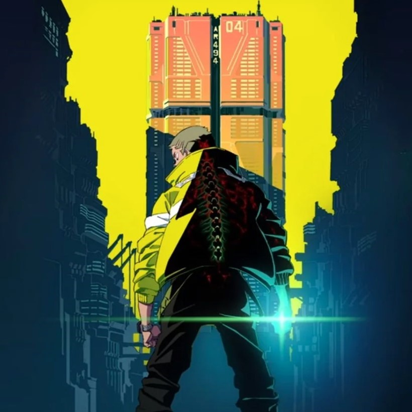
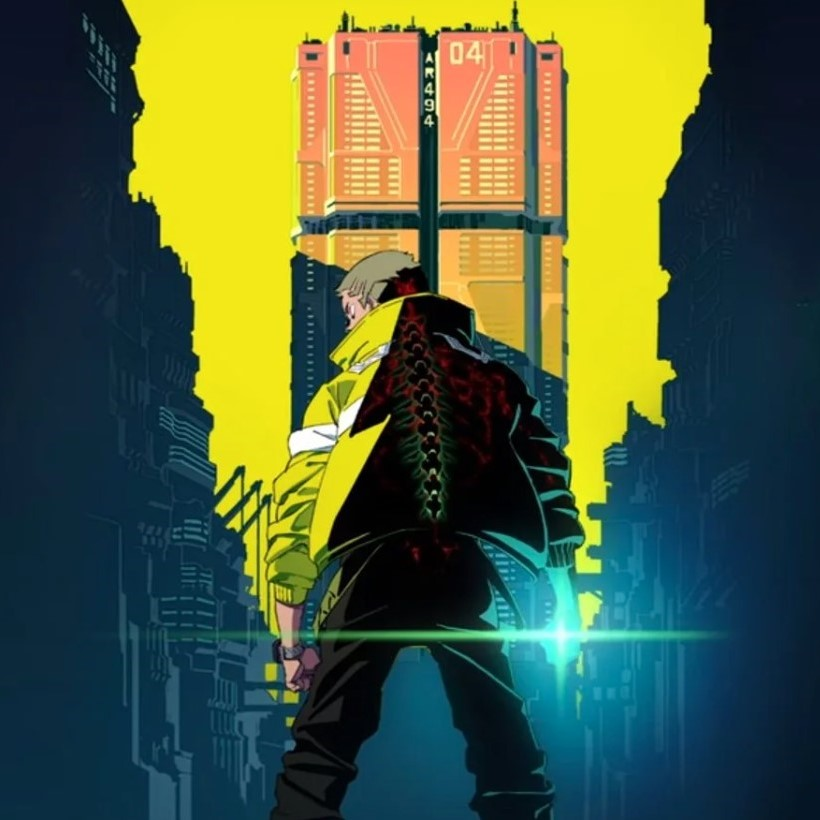
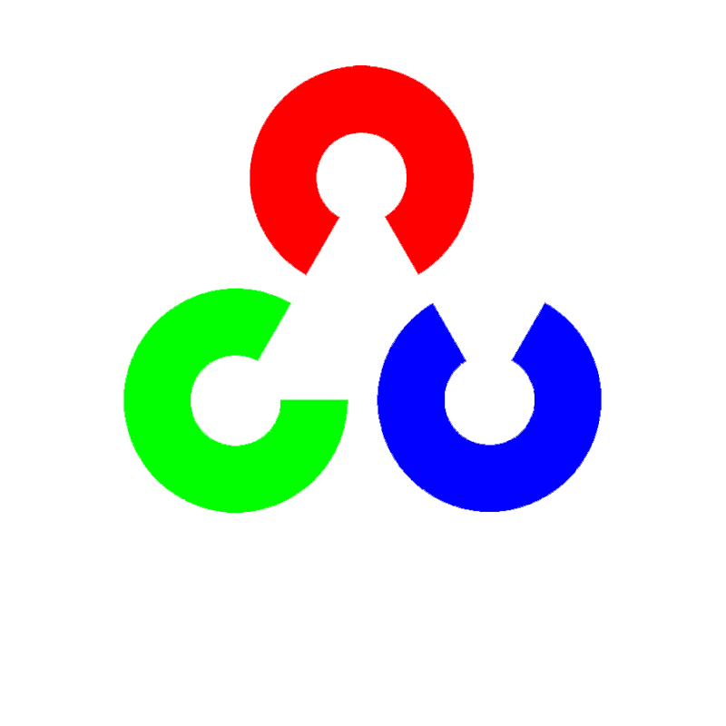
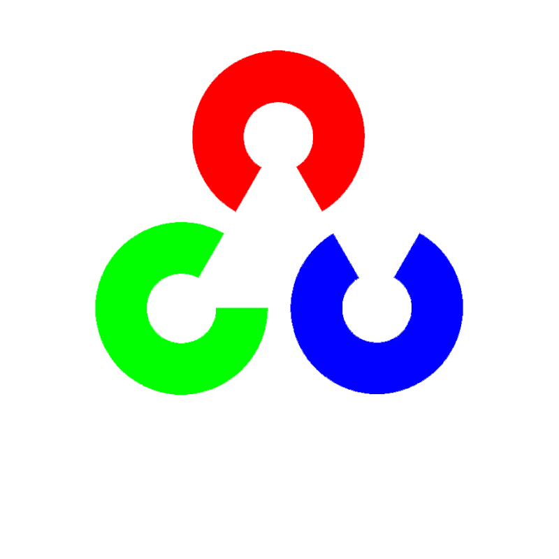

I am a highly adaptable and driven individual with a strong background in technology and systems integration. Trained at Arasaka Academy, I have hands-on experience in optimizing hardware and software, particularly in the field of cybernetic enhancements. My expertise includes coding, real-time data processing, and integrating cutting-edge technologies to solve complex problems. Passionate about innovation, I thrive in dynamic environments and am eager to leverage my skills to drive technological advancement.
My journey into the tech world began with a relentless curiosity about the intersection of human biology and cutting-edge technology. Growing up in Night City, I was surrounded by advancements that pushed the limits of human potential—cybernetic enhancements, AI systems, and real-time data processing. My time at Arasaka Academy solidified my passion for integrating technology into everyday life. I quickly became obsessed with the idea of optimizing both human and machine capabilities to solve complex problems. From mastering coding languages to designing and fine-tuning cybernetic implants, I've learned to think outside the box and constantly push the boundaries of what's possible. Now, I strive to innovate, aiming to create systems that not only advance technology but elevate human experience and capability in ways never before imagined.
 

I have a strong foundation in programming with languages like Java, JavaScript, and HTML/CSS. I enjoy building dynamic, responsive web applications and integrating AI-driven solutions using tools like TensorFlow and OpenCV. I’m also skilled in AJAX and jQuery, which help me create smooth, interactive user experiences. My goal is to use these skills to develop innovative solutions that enhance both performance and user engagement.
Feel free to reach out to me via email at dMartinez@cyberpunk.com if you'd like to collaborate, chat, or share some cool tech news!